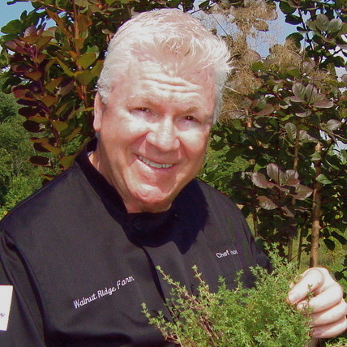

Welcome to ASMR Recipe Relaxation with Amos Miller. I'm your host, Amos Miller, and I'm so glad you could join me as I guide you through an audio collection of my favourite recipe creations, step by step. Now sit back, relax and enjoy.
Welcome to ASMR Recipe Relaxation with Amos Miller. I'm your host, Amos Miller, and I'm so glad you could join me as I guide you through an audio collection of my favourite recipe creations, step by step. Now sit back, relax and enjoy.
About
 It's my 'thyme' to get cookin'! I cook to please myself, my family, my friends, and then anyone else (in that order) who will eat or try the dishes I set out or recommend. There is nothing more personal, or that shows love and respect for our fellow man, than the ability to please the palates of the diners.
I'll never submit a recipe I don't believe rates a '5' on this site. There are millions of recipes out there - why waste time and be disappointed? I like to lower those odds in favor of enjoyment and satisfaction. I truly hope nothing I recommend on this site, or elsewhere, will disappoint any cook from beginner to pro, or go to waste, which is even worse.
My motto is:
"cooking well is it's own reward".
It's my 'thyme' to get cookin'! I cook to please myself, my family, my friends, and then anyone else (in that order) who will eat or try the dishes I set out or recommend. There is nothing more personal, or that shows love and respect for our fellow man, than the ability to please the palates of the diners.
I'll never submit a recipe I don't believe rates a '5' on this site. There are millions of recipes out there - why waste time and be disappointed? I like to lower those odds in favor of enjoyment and satisfaction. I truly hope nothing I recommend on this site, or elsewhere, will disappoint any cook from beginner to pro, or go to waste, which is even worse.